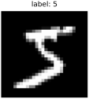
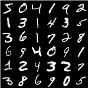
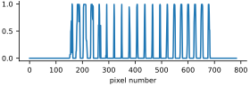
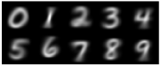
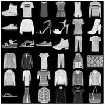

Reading handwriting is one of the oldest problems in machine perception, and one of the most instructive. Every literate person does it without effort. Nobody can write down the rules they use, and the variety is enormous: no two people write a 7 the same way. In this chapter we meet the dataset on which a whole generation of researchers cut their teeth, MNIST, and we learn to see each handwritten digit the way a neural network will see it: as a single point in a space with 784 dimensions.
Sixty thousand digits
MNIST contains 70,000 small grayscale images of handwritten digits, collected from American high-school students and Census Bureau employees, each labeled with the digit it shows. The torchvision library, a companion to PyTorch, will download it for us.
from torchvision.datasets import MNIST
train_set = MNIST('data', train=True, download=True)
test_set = MNIST('data', train=False, download=True)
print(len(train_set), len(test_set))60000 10000
The data is split in two. The 60,000 training images are what a model learns from. The 10,000 test images are kept aside and used only to measure how well it learned. A model is only useful if it does well on examples it has never seen; a student who memorizes the answer key has not learned arithmetic. We will be strict about this separation throughout the book.
The images are stored as one big array, which we convert to NumPy:
X = train_set.data.numpy()
Y = train_set.targets.numpy()
X_test = test_set.data.numpy()
Y_test = test_set.targets.numpy()
print(X.shape, X.dtype)
print(Y.shape, Y[:10])(60000, 28, 28) uint8 (60000,) [5 0 4 1 9 2 1 3 1 4]
X is a stack of 60,000 images of pixels, and Y holds the matching labels. We will use these letters throughout the book: X for inputs, Y for the answers, and _test for the held-out versions. Here is the first one:
plot(X[0], title=f'label: {Y[0]}', size=2)
It is worth seeing the numbers behind the picture at least once. Dividing each pixel by 26 squashes the range 0–255 down to the single digits 0–9, small enough to print the whole image as text:
for row in X[0] // 26: # squash 0-255 down to the digits 0-9
print(''.join(str(v) if v else '.' for v in row))............................ ............................ ............................ ............................ ............................ ................45616994.... ........1135699999869972.... .......1999999999933321..... ........8999997799.......... ........364997..15.......... ...........593.............. ...........597.............. ............792............. ............19864........... .............39994.......... ..............179951........ ................3997........ .................9992....... ..............157997........ ............15899997........ ...........48999973......... .........28999973........... .......68999973............. ....268999995............... ....5999855................. ............................ ............................ ............................
Many at a glance
To look at many images at once we will use a montage, which tiles a stack of images into one big picture. Here is a helper we will use for the rest of the book. It separates the tiles with a one-pixel border, lets us choose the grid (grid_shape) and the width in inches, and has one option we will need for weights, which can be negative: symmetric=True draws zero as middle gray, positive values lighter and negative values darker.
from skimage.util import montage
def montage_plot(images, size=3.2, grid_shape=None, symmetric=False):
images = np.asarray(images)
lo, hi = images.min(), images.max()
if symmetric: # zero is drawn as middle gray
hi = np.abs(images).max()
lo = -hi
tiled = montage(images, grid_shape=grid_shape,
padding_width=1, fill=lo)
plt.figure(figsize=(size, size * tiled.shape[0] / tiled.shape[1]))
plt.imshow(tiled, cmap='gray', vmin=lo, vmax=hi)
plt.axis('off')
plt.show()
montage_plot(X[:36])
print(Y[:36].reshape(6, 6))[[5 0 4 1 9 2] [1 3 1 4 3 5] [3 6 1 7 2 8] [6 9 4 0 9 1] [1 2 4 3 2 7] [3 8 6 9 0 5]]

Look closely and you will see how hard the problem really is. Some 4s are closed at the top and some are open; 1s lean at different angles; the 2 at the end of the first row curls at its base, while those in the fifth row do not. The ten digits are not equally common, but they are close:
print(np.bincount(Y))[5923 6742 5958 6131 5842 5421 5918 6265 5851 5949]
From pictures to vectors
As in Chapter 7, we will work with pixel values between 0 and 1:
X = X / 255.0
X_test = X_test / 255.0
print(X.dtype, X.min(), X.max())float64 0.0 1.0
Now the key step. A image has 784 pixels, and reshaping turns the grid into one long list, row after row. This is called flattening.
x = X[0].reshape(784)
print(x.shape)
plt.figure(figsize=(6, 1.6))
plt.plot(x)
plt.xlabel('pixel number')
plt.show()(784,)

Nothing is lost: x.reshape(28, 28) gives back the original image.
Why throw away the grid? Because the weighted-sum machinery of Chapter 6 works on lists. Once each image is a row of 784 numbers, the whole training set is a single matrix, one image per row, ready to be multiplied:
X = X.reshape(len(X), 784)
X_test = X_test.reshape(len(X_test), 784)
print(X.shape, X_test.shape)(60000, 784) (10000, 784)
A geometric picture helps here. A list of two numbers is a point on a plane; three numbers, a point in space. A list of 784 numbers is a point in a 784-dimensional space. Nobody can picture that space, but the mathematics does not care. Each handwritten digit is one point in it. Similar-looking images are nearby points, and the hope behind everything that follows is that the 5s cluster in one region, the 7s in another, and that a machine can learn where the boundaries between the regions lie.
A classifier with no learning
Before we let a machine learn anything, let’s see how far simple averaging gets us. Average all the training images of each digit, pixel by pixel, and you get ten blurry “typical” digits (Figure 8.4).
means = np.array([X[Y == k].mean(axis=0) for k in range(10)])
print(means.shape)
montage_plot(means.reshape(10, 28, 28), grid_shape=(2, 5))(10, 784)

These averages are templates. A simple way to classify a new image is to compare it with each template and pick the best match. The dot product from Chapter 6 measures how much two images overlap. Multiplying the whole test set by the matrix of templates gives a score for every image and every digit at once, and argmax picks the winner:
scores = X_test @ means.T # (10000, 784) @ (784, 10)
guesses = np.argmax(scores, axis=1)
print(scores.shape)
print(guesses[:10])
print(Y_test[:10])
print(np.mean(guesses == Y_test))(10000, 10) [7 2 1 0 4 1 8 9 0 9] [7 2 1 0 4 1 4 9 5 9] 0.631
Sixty-three percent correct, with no learning at all. Random guessing would get ten percent. But the dot product has a flaw: it rewards ink. A template with lots of bright pixels, like 0 or 8, overlaps with almost everything. A fairer comparison is the distance between the image and each template, the sum of squared pixel differences. For each of the ten templates m, subtract it from every test image, square, and add up each row; np.stack then puts the ten columns of distances side by side, and the smallest distance in each row wins:
dists = np.stack([((X_test - m) ** 2).sum(axis=1) for m in means],
axis=1) # one column per template
guesses = np.argmin(dists, axis=1)
print(np.mean(guesses == Y_test))0.8203
Eighty-two percent. If you like algebra, here is the same calculation done faster (it is safe to skip). Expanding turns the middle part into the same matrix multiplication as the templates used, and gives the same answer:
dists = ((X_test ** 2).sum(axis=1, keepdims=True) # |x|^2
- 2 * X_test @ means.T # -2 x.m
+ (means ** 2).sum(axis=1)) # |m|^2
guesses = np.argmin(dists, axis=1)
print(dists.shape)
print(np.mean(guesses == Y_test))(10000, 10) 0.8203
Eighty-two percent is a respectable baseline, and it took one line of averaging. Keep both numbers in mind. In Part III we will stop designing the templates ourselves and let the machine find its own. It will do much better.
A harder set: Fashion-MNIST
MNIST has become so easy for modern methods that researchers created a drop-in replacement with exactly the same format: 70,000 grayscale images in ten classes. These are photographs of clothing from the Zalando online catalog. This is Fashion-MNIST.
from torchvision.datasets import FashionMNIST
fashion = FashionMNIST('data', train=True, download=True)
print(fashion.classes)
montage_plot(fashion.data[:36].numpy())['T-shirt/top', 'Trouser', 'Pullover', 'Dress', 'Coat', 'Sandal', 'Shirt', 'Sneaker', 'Bag', 'Ankle boot']

Shirts, T-shirts, pullovers and coats look a lot alike at this resolution, which makes Fashion-MNIST a good deal harder. Because the format is identical, every piece of code in this book that works on one dataset works on the other by changing a single word. We will use digits when we want to see clearly what a model is doing, and clothing when we want a challenge.